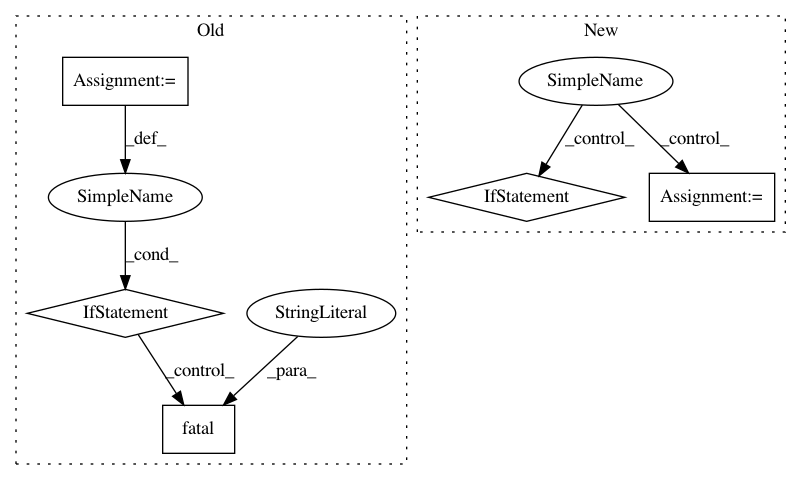

5498cb8bd7e7f3bb10ffe7d2c7ce3b0753df71e2,src/train/retrain.py,,get_or_create_bottleneck,#Any#Any#Any#Any#Any#Any#Any#Any#Any#,386
Before Change
print("Creating bottleneck at " + bottleneck_path)
image_path = get_image_path(image_lists, label_name, index, image_dir,
category)
if not gfile.Exists(image_path):
tf.logging.fatal("File does not exist %s", image_path)
image_data = gfile.FastGFile(image_path, "rb").read()
bottleneck_values = run_bottleneck_on_image(sess, image_data,
jpeg_data_tensor,
bottleneck_tensor)
After Change
except:
print("Invalid float found, recreating bottleneck")
did_hit_error = True
if did_hit_error:
create_bottleneck_file(bottleneck_path, image_lists, label_name, index, image_dir, category, sess, jpeg_data_tensor, bottleneck_tensor)
with open(bottleneck_path, "r") as bottleneck_file:
bottleneck_string = bottleneck_file.read()
// Allow exceptions to propagate here, since they shouldn"t happen after a fresh creation
bottleneck_values = [float(x) for x in bottleneck_string.split(",")]
return bottleneck_values
def cache_bottlenecks(sess, image_lists, image_dir, bottleneck_dir,
In pattern: SUPERPATTERN
Frequency: 3
Non-data size: 5
Instances
Project Name: geometalab/OSMDeepOD
Commit Name: 5498cb8bd7e7f3bb10ffe7d2c7ce3b0753df71e2
Time: 2017-03-20
Author: samuel.kurath@gmail.com
File Name: src/train/retrain.py
Class Name:
Method Name: get_or_create_bottleneck
Project Name: NifTK/NiftyNet
Commit Name: 1f5bd7028636e6320079fc785c4aca9eda51defa
Time: 2019-01-31
Author: wenqi.li@ucl.ac.uk
File Name: niftynet/utilities/util_common.py
Class Name:
Method Name: average_multi_opt_gradients
Project Name: deepmind/dm_control
Commit Name: 5cc8c9bfff0537c70afc3ca8ab9f0162309a82d8
Time: 2019-02-18
Author: stunya@google.com
File Name: dm_control/autowrap/autowrap.py
Class Name:
Method Name: main